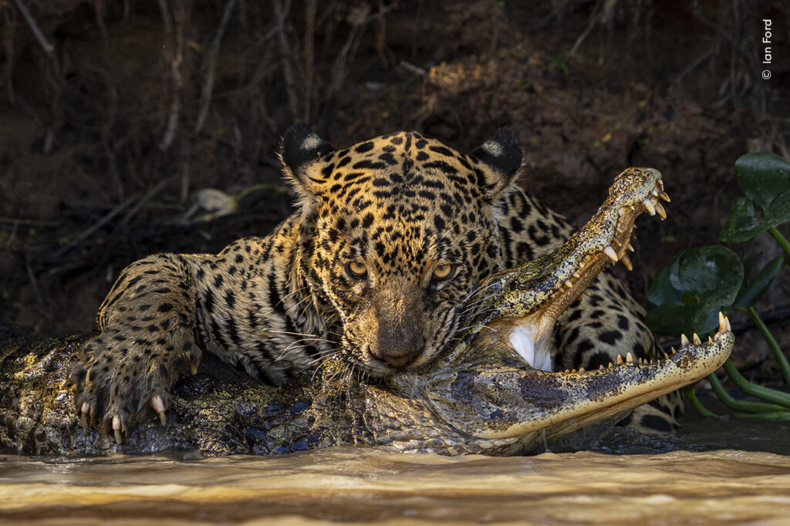

Vahşi yaşam, dünya üzerindeki tüm doğal ekosistemlerde var olan çeşitli canlı türlerini kapsamaktadır. Bu muhteşem biyolojik çeşitlilik, milyonlarca yıllık evrim sürecinin bir sonucu olarak ortaya çıkmıştır. Her bir tür, bulunduğu ekosistemin dengesi için vazgeçilmez bir öneme sahiptir. Vahşi yaşamın korunması, sadece türlerin devamlılığı için değil, aynı zamanda ekosistemlerin sağlıklı işleyişi için de kritik öneme sahiptir. İnsan faaliyetleri sonucunda habitat kaybı, kirlilik, iklim değişikliği ve aşırı avlanma gibi tehditler, birçok türün neslinin tükenmesine neden olmaktadır. Bu nedenle, vahşi yaşamın korunması için uluslararası işbirliği ve bilinçlendirme çalışmaları büyük önem taşımaktadır. Gelecek nesillere sağlıklı ve dengeli bir ekosistem bırakabilmek için, vahşi yaşamın korunması konusunda daha fazla çaba gösterilmesi gerekmektedir.
